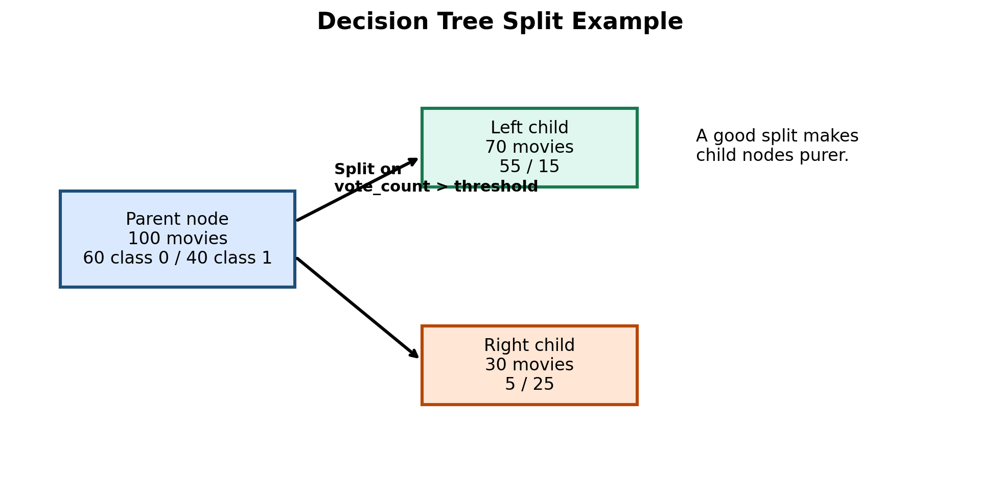
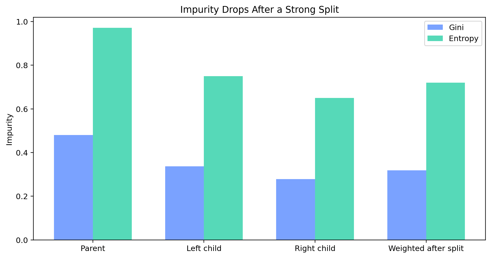
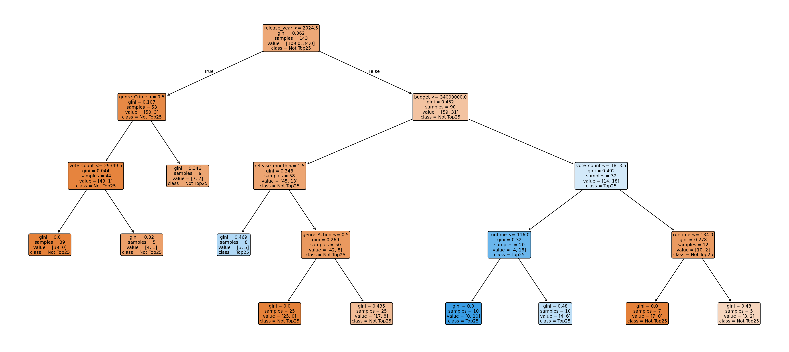
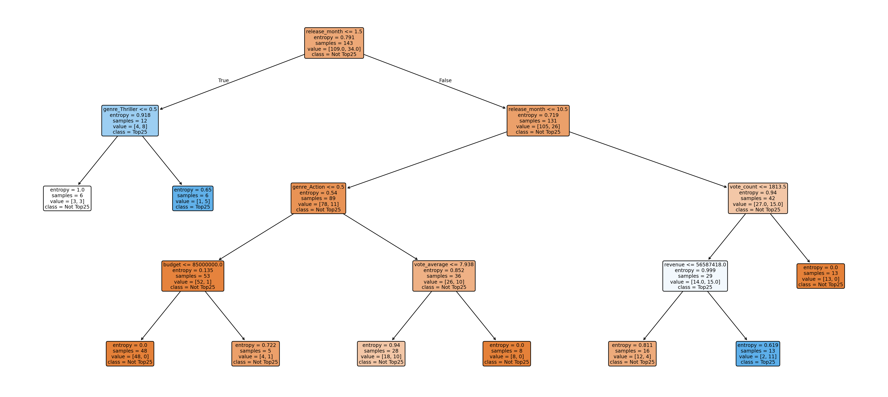
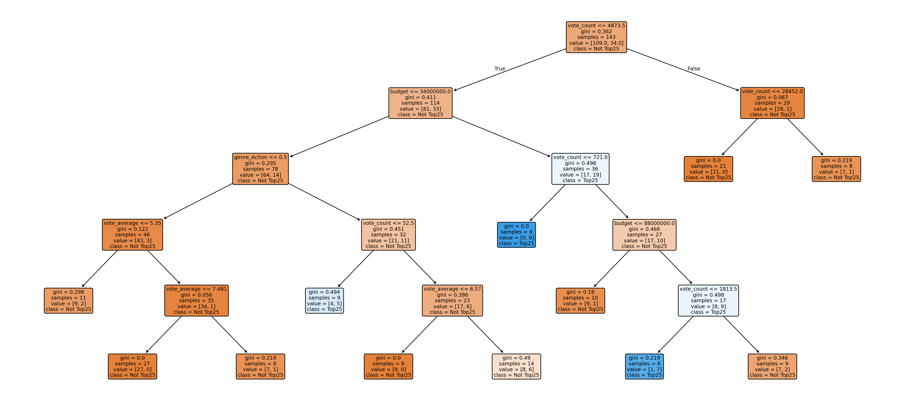
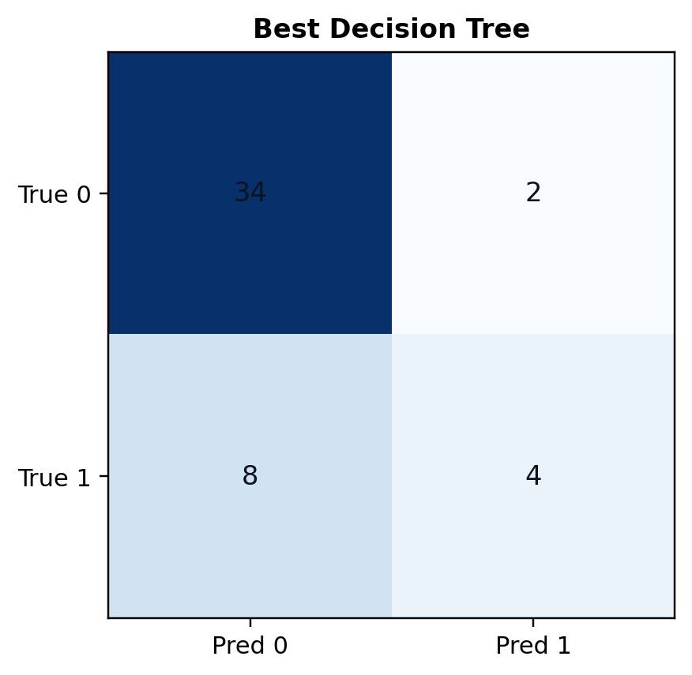
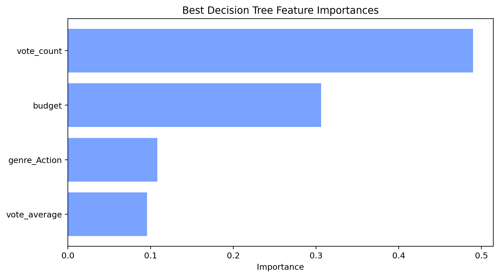

Decision Trees
(a) Overview
A decision tree is a supervised learning model that repeatedly splits the data into smaller groups based on the feature and threshold that best separate the classes. The final result is a tree of if/then rules, which makes the model easy to interpret. In this project, the tree asks questions about movie attributes and predicts whether a movie is likely to be in the top 25% of popularity.
Two common split-quality measures are Gini impurity and Entropy. Both reward splits that create purer child nodes, meaning each child node contains more of one class and less mixing. When using entropy, the improvement from a split is often described as Information Gain, which equals parent entropy minus the weighted child entropy after the split.
Small example: suppose a parent node has 60 class-0 movies and 40 class-1 movies, giving entropy about 0.971. After a split, the weighted child entropy drops to about 0.720. The information gain is therefore 0.251, so that split is better than a split that barely changes the impurity. The same logic applies with Gini: lower weighted impurity after the split means a better split.
It is generally possible to create an almost infinite number of trees because there are many choices at every step: which feature to split on, where to place the threshold, how deep to grow, how many rows to require in each leaf, what stopping rule to use, and whether to prune afterward. Even with the same dataset, changing one of those design choices can produce a different tree.


(b) Data Prep
I used the same deduplicated TMDB dataset as in the NB section, again targeting
label_popular_top25. After removing duplicate movie IDs, the supervised modeling dataset had
191 unique movies. I kept numeric movie features and multi-label genre indicators because trees
can naturally handle mixed feature types.
The train/test split was the same stratified split used throughout Module 3: 143 training rows and 48 testing rows. The training and testing sets must be disjoint so that the decision tree is evaluated on unseen movies rather than memorized records. The split summary again reports 0 overlap in movie IDs across the two sets.
- Prepared modeling data: module3_modeling_dataset.csv
- Split summary: train_test_split_summary.json
- Training sample: train_sample.csv
- Testing sample: test_sample.csv


(c) Code
The decision tree models were generated in Python inside the same Module 3 pipeline. I intentionally produced three different trees with different root nodes by changing the split criterion, depth settings, and the available feature set after earlier root features were removed.
- Decision tree code: 07_supervised_tmdb.py
- Decision tree metrics: dt_model_metrics.csv
(d) Results
I created three different decision trees, and each one began with a different root node. Tree A used release_year as the root and reached 0.7292 accuracy. Tree B used release_month as the root and reached 0.7708 accuracy. Tree C used vote_count as the root and was the best tree with 0.7917 accuracy.
| Tree | Criterion | Max depth | Root node | Accuracy |
|---|---|---|---|---|
| Tree A | Gini | 4 | release_year | 0.7292 |
| Tree B | Entropy | 4 | release_month | 0.7708 |
| Tree C | Gini | 5 | vote_count | 0.7917 |

release_year.

release_month.

vote_count and best overall accuracy.


(e) Conclusions
The decision tree results show that movie popularity in this dataset is strongly tied to simple, interpretable split rules. Release timing mattered in two trees, while vote_count produced the strongest root node in the best tree. For this project, decision trees were useful because they gave a competitive accuracy score and also made the prediction logic easy to explain visually.